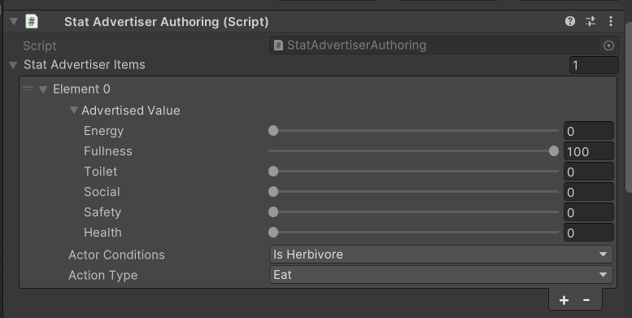
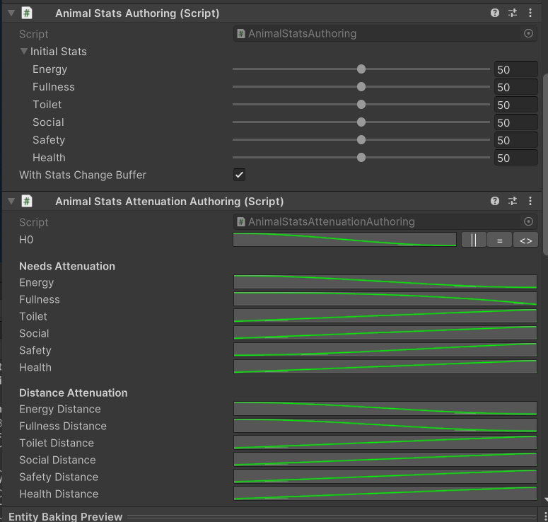

What I’m working on
At the moment I’m deeply involved in learning ECS and data-oriented design. I believe that with AI on its side it might become a future of game development.
I started working on my own project, and in between decided to sell intermediate packages to the Unity Asset Store (WIP).
LittlePhysics
Coming to the Asset Store soon
Little Physics is a Unity ECS physics package for large-scale simulations. Pause or speed up the simulation, use dynamic, static, kinematic, and trigger bodies, and tune LOD for simulation accuracy. A spatial map limits object-to-object collisions to a volume you define. The package supports directional and radial gravity, friction, and custom job interfaces for collision detection and linecasts.
With ECS, Burst, and multithreading, it can handle on the order of 1,000,000 entities. It suits low-determinism workloads such as crowds, liquids, and particles.
Upcoming next
Little Needs
In development
Need-based decision system based on an article by Robert Zubek — for Unity ECS.
- Allows setting up actions for entities to choose from.
- User-defined list of needs.
- Convenient setup of advertised needs with attenuation.


Little Actions
In development
Action chaining for Unity ECS.
- Allows a chain of actions.
- Can edit the chain at runtime.
- A managed-to-unmanaged interpreter lets you create actions in managed C# as classes and then translate them into Burst-compatible multithreaded code.
Little Planet Keeper
All of the packages above will be used in my upcoming Unity ECS project — Little Planet Keeper — a planet simulator where you control tens of thousands of entities.
Prototype: